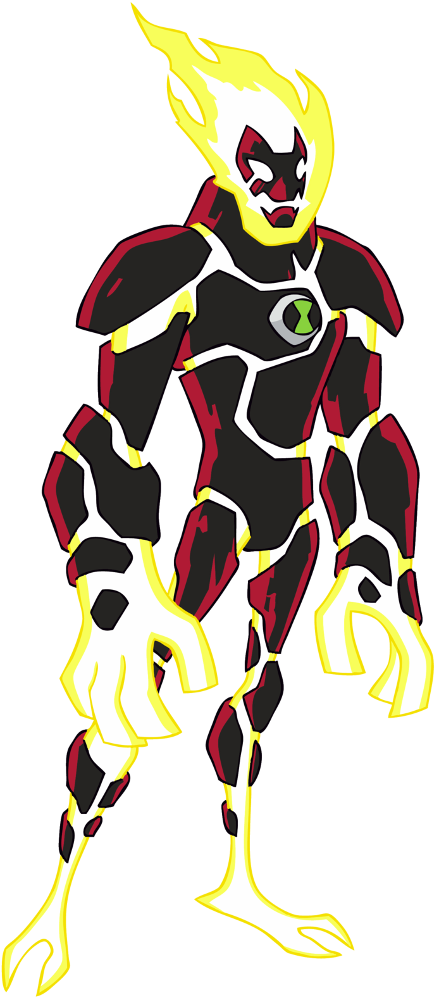
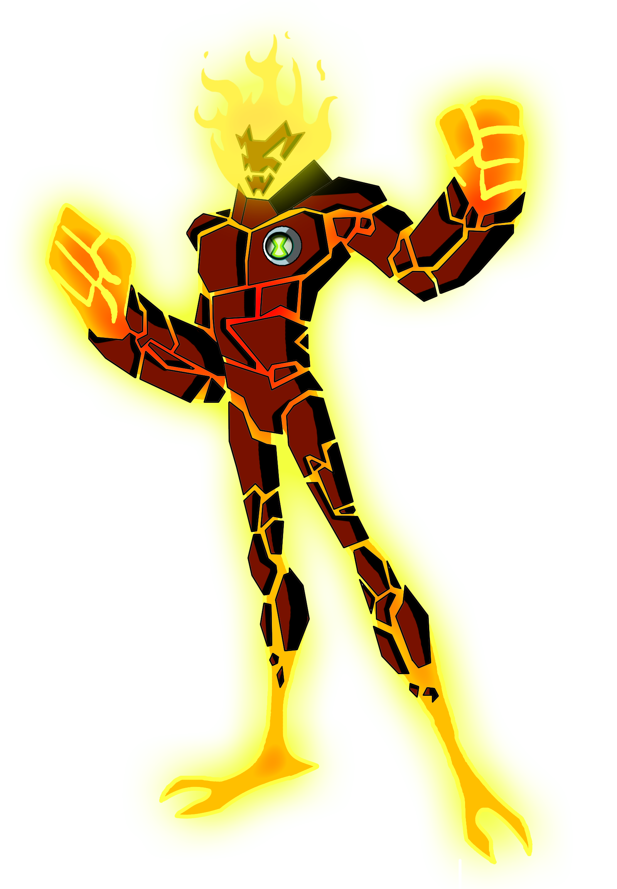

Heatblast

Heatblast is a plasma-based life-form humanoid alien whose body is composed of a super hot inner plasma body covered by dark reddish brown volcanic rocks.[pop-up 1][1] He is seven feet tall.[CN 1] As a fire-based entity, his body radiates high amounts of heat. His feet have a slight oval-like design with only two toes and one back toe and he has somewhat large hands with bridged wrists. His tongue is also made of fire while his collarbone resembles a volcano which generates a fiery hair-like aura that covers his head, leaving his mask-like face visible with no nose, ears, or pupils.
When under the effects of a cold in Side Effects, Heatblast's fiery skin (excluding his rocky body) turned blue.
In Back With a Vengeance, Heatblast wore a yellow raincoat.
4-year-old Heatblast looked the same as 10-year-old Heatblast did in the Original Series, but with a much smaller and thinner body, as well as an oversized head.
In Destroy All Aliens, Heatblast looks the same as he did in the Original Series, except his plasma body glows brighter, and emits movement, similar to the Sun. The rocks show small but noticeable cracks around him, much like other minerals.
In Race Against Time, Heatblast had less fire on his head and most of his head was exposed. His stone skin gained cracks of yellow glow and his plates were further apart, exposing almost parts of his plasma body. The Omnitrix symbol appeared to be embedded in his chest.
In Ultimate Alien, Heatblast closely resembled Alan Albright, only taller, not as skinny, slightly altered and his face shape was more similar to the Original Series. His eyes were no longer connected to the fire on his head. The rocks over his body changed, with a burnt black color and red markings on every edge of his rocky skin, resembling charcoal and his plasma body is a lighter shade of yellow.
In Heroes United, Heatblast looked the exact same as he did in the Original Series, only his jaw was a lot lower than it was before.
In The Forge of Creation, 10-year-old Heatblast's appearance is a mix between the Ultimate Alien design and the Original Series' body color. Also, his Omnitrix symbol was green.

In Omniverse, Heatblast looks the same as he did in Ultimate Alien, only his eyes are once again connected to the fire on his head, like in the Original Series. He is taller and more muscular, his face's design is different, and his shoulder plates are slightly tilted up. His feet are also redesigned. 16, 10, and 11-year-old Heatblast share the exact same design with the exception of the ring around the Omnitrix symbol, which is silver in the 11-year-old version and white in the 16-year-old version.
When put out by water, Heatblast's plasma body was a maroon color. His rocky skin is a darker shade of red, almost pink. The flame exposes his head. However, he is enveloped by a faint rising steam.